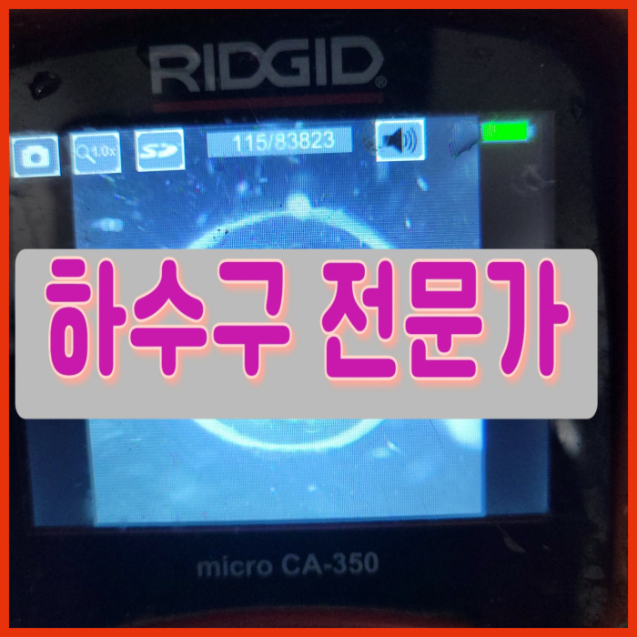
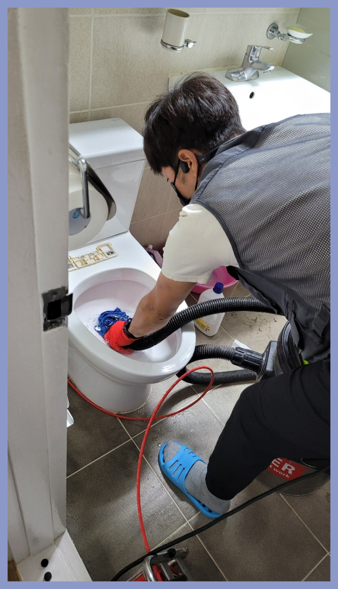
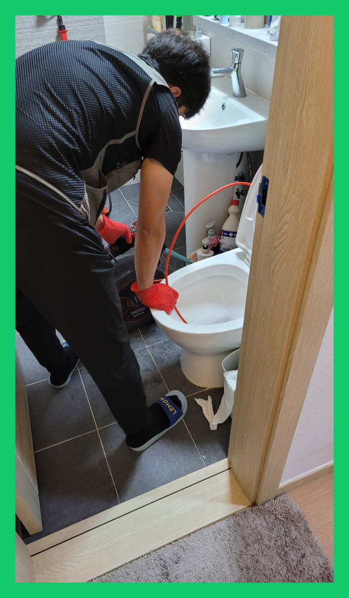
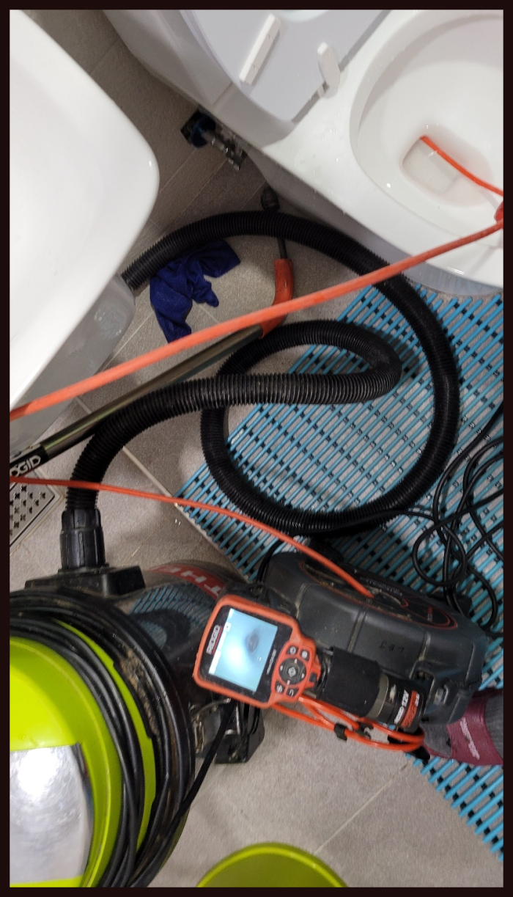
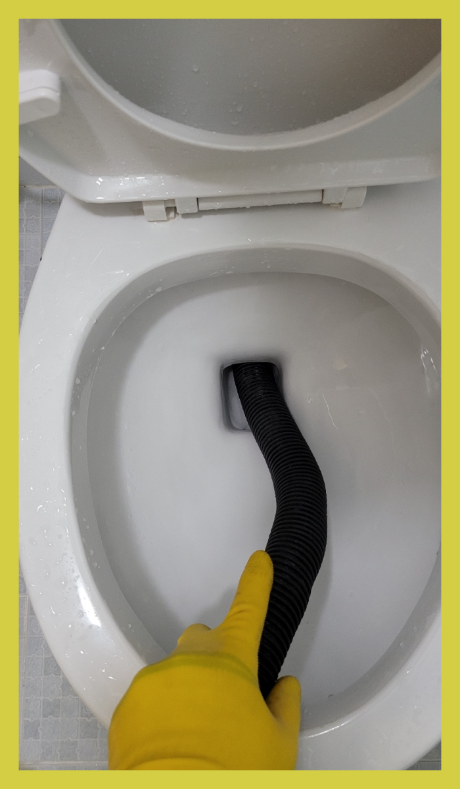
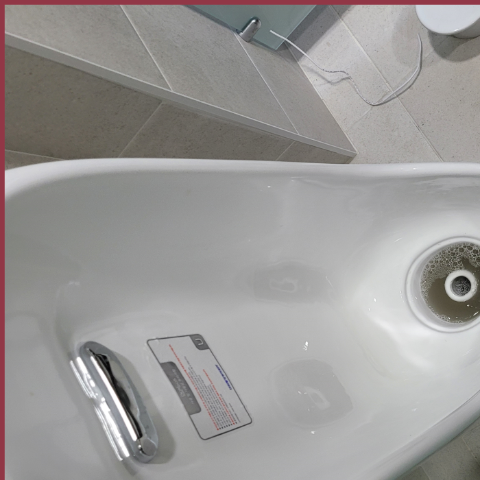
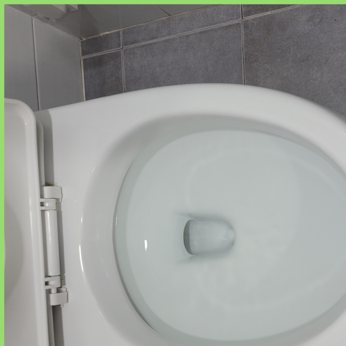

🏠 안중변기막힘 뚫음 포승 변기하수구역류 변기부속교체 수리 설비
용인 싱크대막힘 전문 시공 후기

📋 작업 개요
- 위치: 용인
- 서비스 유형: 싱크대막힘, 변기막힘, 하수구막힘, 배관막힘, 역류해결, 뚫는업체, 배관청소, 고압세척
- 작업 일시: 2023. 11. 30. 0:31
- 업체명: 하수구수사대 (010-5615-2118)
🔍 문제 상황
안녕하십니까^^
설비전문업체 "하수구수사대"를 찾아주셔서 감사합니다^^
누구나 한번쯤은 배관 막혀 난감하셨던 경험이 있으실 겁니다. 배관가 막혔을때 처음에는 직접 셀프로 뚫수도 있는 방법에 대해 알아보고 시도하는 분들이 많으십니다.
이번처럼 배수구막힌 상태라면 아무리 열심히 해도 그대로라고 말씀을 드렸고 이번 기회에 왜 배수구에 이물 지을 제거해야 하는지도 알려드렸습니다. 그랬더니 몰랐다고 하시면서 그래서 배수구가 막혔구나 하시면서 저희보고 이제는 관리를 잘하겠다고 말씀을 하셨습니다.
안중변기막힘 뚫음 포승 변기하수구역류 변기부속교체 수리 설비

🔎 원인 분석
💡 전문가 진단: 안중변기막힘 뚫음 포승 변기하수구역류 변기부속교체 수리 설비
하수 막힘의 문제를 해결하는 데 있어서 눈에 보이지 않는 막힘의 원인을 찾는 것은 중요하고 필요한 방법이라고 할 수 있습니다. 배관의 내부를 처음부터 끝까지 배관 내시경을 통해서 꼼꼼하게 확인을 하는 작업을 하였습니다.
저희는 현장에 도착해서 고객님이 말씀해 주신 현상들을 참고해서 전체적인 시공 방법에 대해서 설명을 드린 뒤에 하수도막힘 작업에 들어가게 되었습니다. 이번 현장 시공에서도 막힌 위치가 어디인지 그리고 어떤 이물질들로 막히게 되었는지를 확인하는 것이 중요했는데요.
심각하게 막힌 현장은 기본장비로는 소용이 없어서 다른 방법을 진행해야 하는데 이럴때 주로 사용하는 것이 샤프트장비입니다. 배관 장비는 이물질을 단순히 뚫어내기보단 이물질을 분쇄하는 방식으로 최근에 많이 사용하고 있는 방식입니다.
배수구 내부를 확인하고 배관 안 쪽에 아직 남아있는 슬러지들을 꼼꼼하게 제거하고 근본적인 원인을 제거해야 또 다시 막히는 일이 없으니 이런 식으로 뚫는 작업을 한다면 막힘이 나타나지 않을 거에요.
배수구 막힘으로 인해서 생기는 불편함을 줄이기 위해서는 평소에 정기적으로 관심을 가지고 한 번씩 점검을 해주는 것이 필요하다고 할 수 있습니다. 배수구 막힘이 발생을 하게 되면 어떤 분들은 급하고 당황스러운 마음에 혼자서 해결을 하고자 하는데요.
그럴 때는 관 속에 있는 이물질을 직접 제거를 하고 배수관배관이 오래된 경우에는 연결 부위에 있는 고무패킹까지도 교체를 해주어야 하는 상황이 생기기도 합니다. 이번 현장에서처럼 보통 배수관막힘이 있는 경우는 원인이 무엇인지를 파악을 하는 일이 가장 중요하다고 할 수 있습니다.

🔧 작업 과정
단순히 스프링 기계 또는 석션기를 활용한 응급조치만 하였기에 별다른 문제점을 발견 못했다고 하셨어요. 진단 결과 근본적인 문제가 되는 물질들을 말끔히 제거해 드려야겠다고 생각하였는데요. 고압세척 등을 통해 퇴수 내부에 있는 이물질 덩어리들을 제거하였습니다.
당장 화장실을 이용을 못하다 보니 무척 불편하신 상황이라고 급히 연락을 주셨는데요.배수구막힘 빠른 해결을 하기 위해서 저희는 우선 작업 진행과정을 말씀드린 후에 본격적인 작업으로 들어갔습니다.
어디를가든 예상보다도 많은수의 배관들이 있답니다.배수관막힘은 싱크대나 화장실등등 어디를가나 존재하고있죠. 그러므로인해 지속적으로 관리하셔야하는데요.그런데도불구 막상건드리기는 어려우실겁니다
저희하수관설비회사의경우 실력자로만 모여있기에 확실하게뚫어버릴수 있다는생각을갖고 설령실패했더라도 비용을요구하지 않고있기때문에 걱정하시지않아도됩니다
배출구업체 비양심적인곳은 해결하지않아도 출장비를요구하기에 이러한부분을 신경쓰지않는다면 돈만낭비하게돼죠
퇴수 수리를한번맡기시고도 여러차례의뢰하시는 고객분들이계셔서 빈틈없게끔 도와드리고있으며 신용을중요하게 여기고있어요.
카페하수관나 주택하수구 하수관 속 기름 제거는 한순간에 쌓이는 것이 아니라 물을 버리는 과정에서 흘러들어가는 찌꺼기들이 점차 쌓이며 역류나 하수관막힘이 일어나기 때문에 물이 넘치는 원인에 대해 하수관 업체에 맡겨 꼼꼼히 검사하고 해결하면 예민하게 신경 쓰시지 않으셔도 됩니다.
배관 내시경 카메라로 보이지 않는 배관 상태를 파악하여 그게 맞는 장비를 투입하는데요 배관막힘 증상이 반복하지 않으려면 배관청소 전문가를 통해서 배관 상태를 점검받고 확실한 제거 작업을 통해 배관막힘 증상을 해결할 수 있습니다.
주말 오전 아침을 준비하다 이상함을 느끼고 배수구 살펴보니 물이 무척 느린 속도로 빠지고 있는 게 보였다는 고객님. 마침 사둔 약품이 있어 붓고 기다렸는데 물이 내려가는 속도에는 변화가 없었다고 하네요.


✅ 작업 완료
그리고 심각하게 오지요. 그럴 때에는 셀프 뚫음보다는 이렇게 퇴수구 전문설비업체에 의뢰해서 확실하게 문제를 해결하는 게 결과도 좋고 문제없이 변기 사용을 할 수 있는 좋은 방법이랍니다.
최첨단 장비 다수 보유로 언제든지 달려가는 저희는 실력도 1등, 친절도도 1등, 고객만족도도 1등입니다. 배관문제로 힘드실 때 불러주시면 신속하게 달려가겠습니다.
#하수구막힘 #하수구뚫음 #하수구역류 #씽크대막힘 #싱크대역류 #오수관막힘 #하수구청소 #욕실하수구막힘 #변기막힘 #하수구뚫는비용 #싱크대수리 #화장실막힘




⚠️ 주방 싱크대 배관 막힘 예방 수칙
- ✅ 기름기가 묻은 식기나 프라이팬은 설거지 전 키친타올로 반드시 기름때를 닦아내세요.
- ✅ 주기적으로 싱크대 개수대에 뜨거운 물을 가득 받아 한 번에 내려 배관 내부 기름을 씻어내세요.
- ✅ 배수구 거름망을 미세한 필터로 사용하시고 음식물 찌꺼기가 틈으로 새어 들지 않게 관리하세요.
- ✅ 베이킹소다와 식초를 뜨거운 물과 함께 일주일에 한 번씩 부어주면 배관 살균과 막힘 예방에 좋습니다.
💡 핵심 정리
- 확실한 장비 작업(내시경 점검 및 샤프트 스케일링)으로 원인을 뿌리 뽑습니다.
- 작업 후 1년 이내에 동일한 부위 재발 시 100% 무상 A/S 서비스를 보장합니다.
- 서울 · 경기 · 인천 전 지역에 24시간 언제든 긴급 출동할 수 있도록 항시 대기 중입니다.
❓ 자주 묻는 질문 (FAQ)
🚨 용인 싱크대막힘 문제로 고민이신가요?
정확한 원인 진단과 확실한 시공으로 재발 없는 해결을 약속드립니다.
24시간 긴급 출동 | 서울 · 경기 · 인천 전지역 | 1년 내 재발 시 무상 A/S